Brandon Rojas Helbig, Pablo Pacheco Pérez
1 Departamento de Ingeniería Mecánica – Universidad de La Serena
Benavente 980 – La Serena – CHILE
e-mail: brandon.rojas@userena.cl, ppacheco@userena.cl
XXIV Congreso Chileno de Mecánica Computacional
Motivación
Simulación
Resultados
Conclusiones
Deshielo de Evaporadores
El agua contenida en el aire se condensa sobre las aletas y los tubos $\rightarrow$ formación de hielo
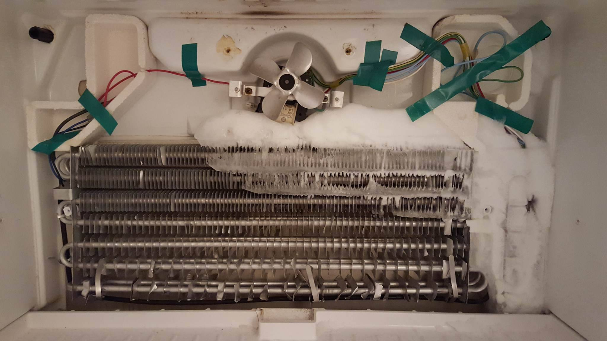
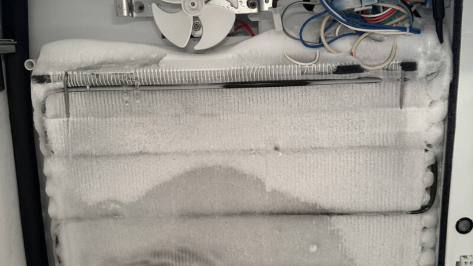
Deshielo de Evaporadores
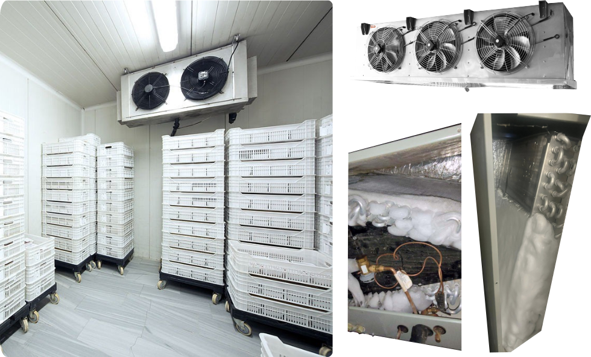
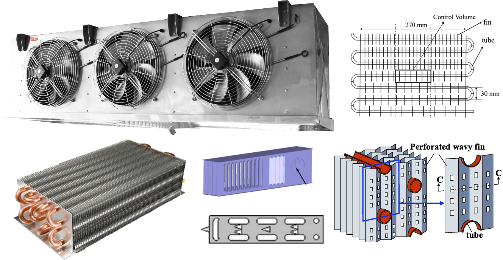
Objetivos:
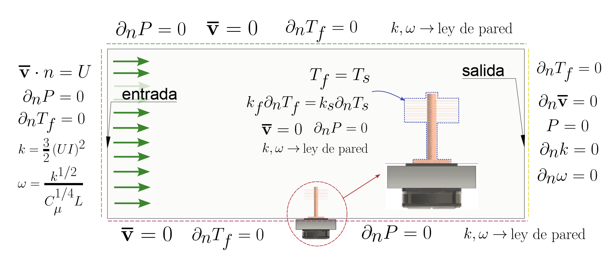
Propiedades por defecto en Fluent (a 1 atm y 298.15 K) - densidad variable:
| Propiedad | Valor por Defecto | Unidad |
|---|---|---|
| Cp (Calor Específico) | 1006.43 | J/(kg·K) |
| Cond. Térmica (\(k\)) | 0.0242 | W/(m·K) |
| Viscosidad (\(\mu\)) | 1.7894e-05 | kg/(m·s) |
Densidad variable \(\rho(T)\) [0°C - 15°C]:
Ajuste respecto a \(T\) en Kelvin (\(273.15 \le T \le 288.15\)):
El Aluminio se asigna a las aletas. El Cobre se asigna a las tuberías:
| Propiedad (Unidades) | Aluminio (al) | Cobre (cu) |
|---|---|---|
| Densidad \(\rho\) [kg/m³] |
2719 | 8978 |
| Calor Específico \(C_p\) [J/(kg·K)] |
871 | 381 |
| Cond. Térmica \(k\) [W/(m·K)] |
202.4 | 387.6 |
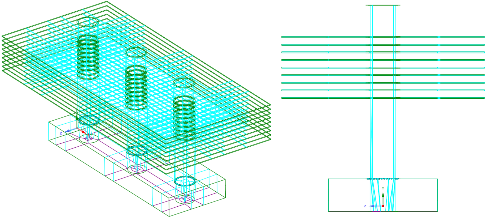
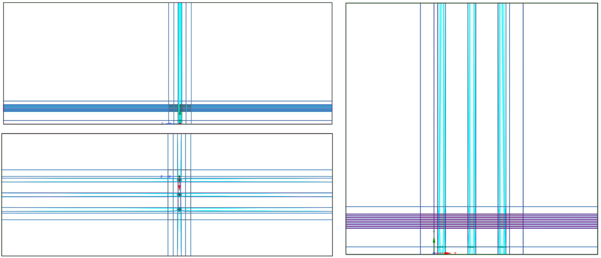
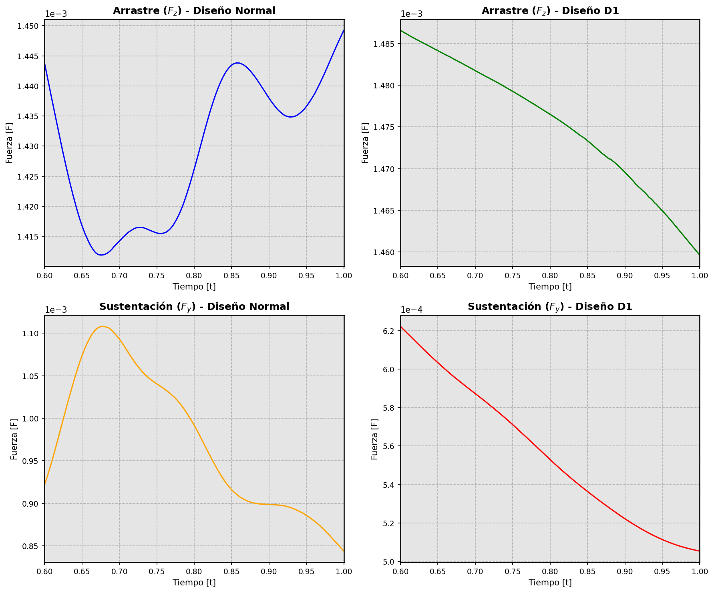
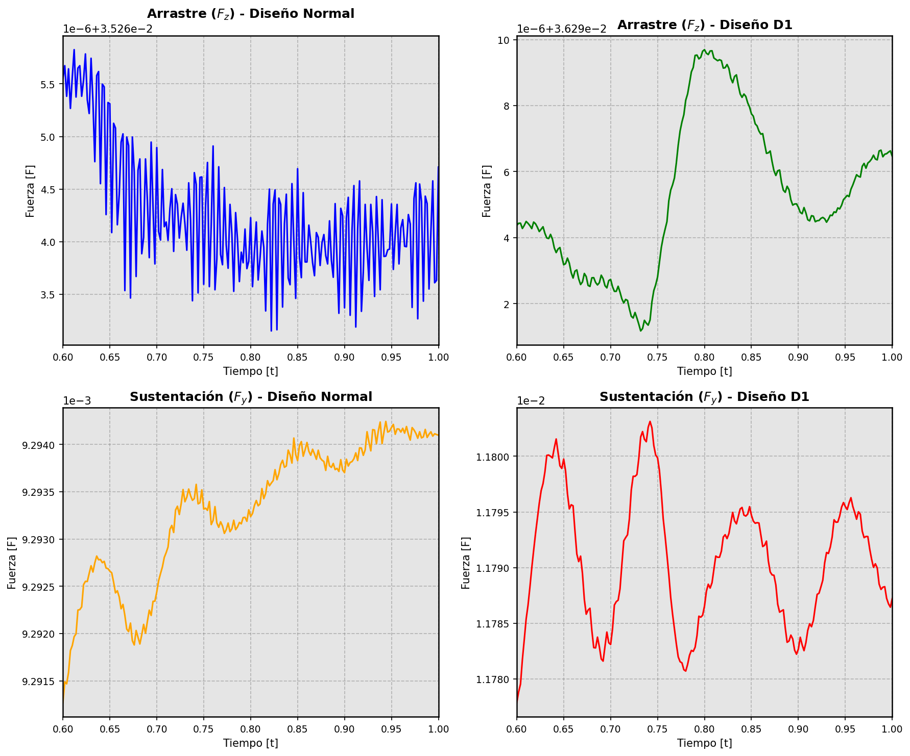
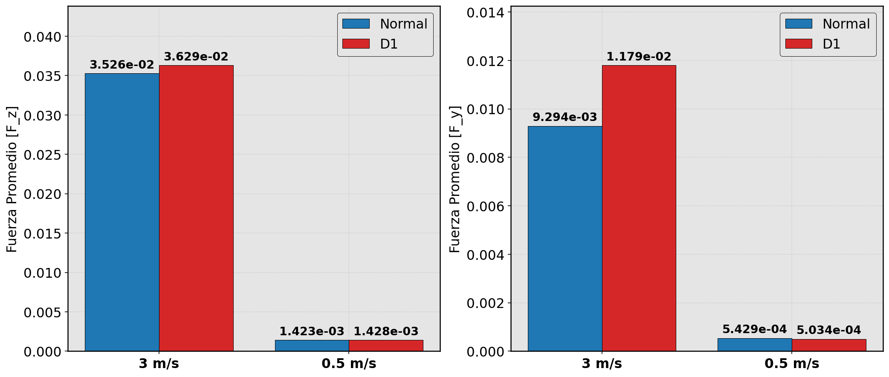
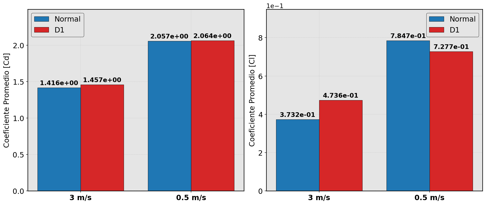
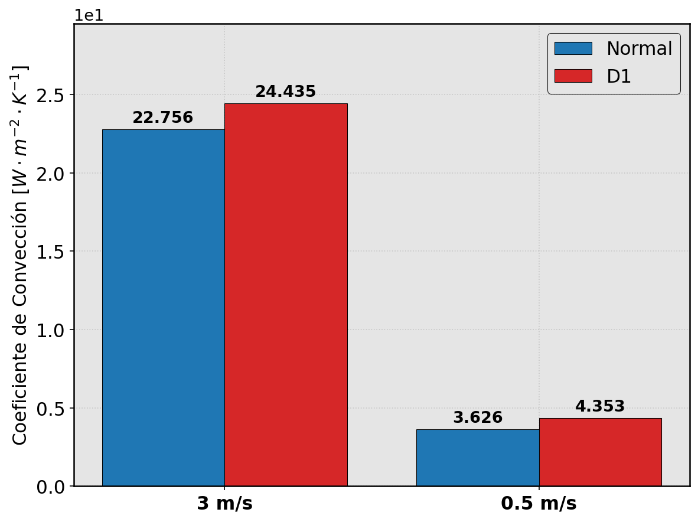
| Parámetro | Velocidad | Diseño Normal | Diseño D1 | Variación (Δ%) |
|---|---|---|---|---|
| $F_z$ / $C_d$ | 3.0 m/s | 3.526e-02 | 3.629e-02 | +2.92% |
| 0.5 m/s | 1.423e-03 | 1.428e-03 | +0.34% | |
| $F_y$ / $C_l$ | 3.0 m/s | 9.294e-03 | 1.179e-02 | +26.90% |
| 0.5 m/s | 5.429e-04 | 5.034e-04 | -7.27% | |
| Convección ($h$) | 3.0 m/s | 22.76 | 24.44 | +7.38% |
| 0.5 m/s | 3.63 | 4.35 | +20.06% |
Las variables de transporte de la turbulencia se calculan analíticamente a partir del flujo medio:
Se definen en función de la distancia adimensional a la pared (\(y^+ = \frac{\rho_f u_\tau y}{\mu_f}\)):